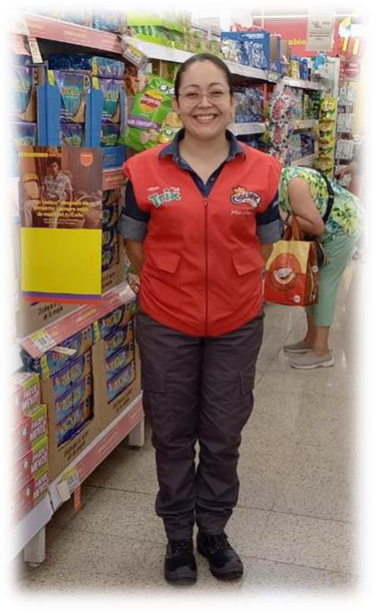
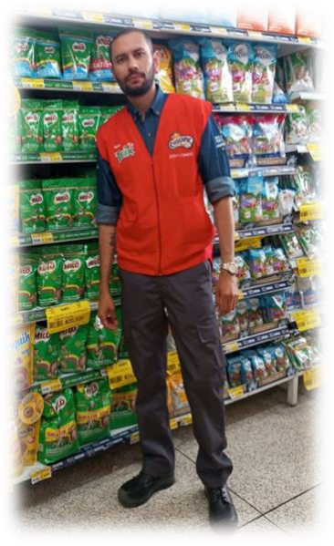
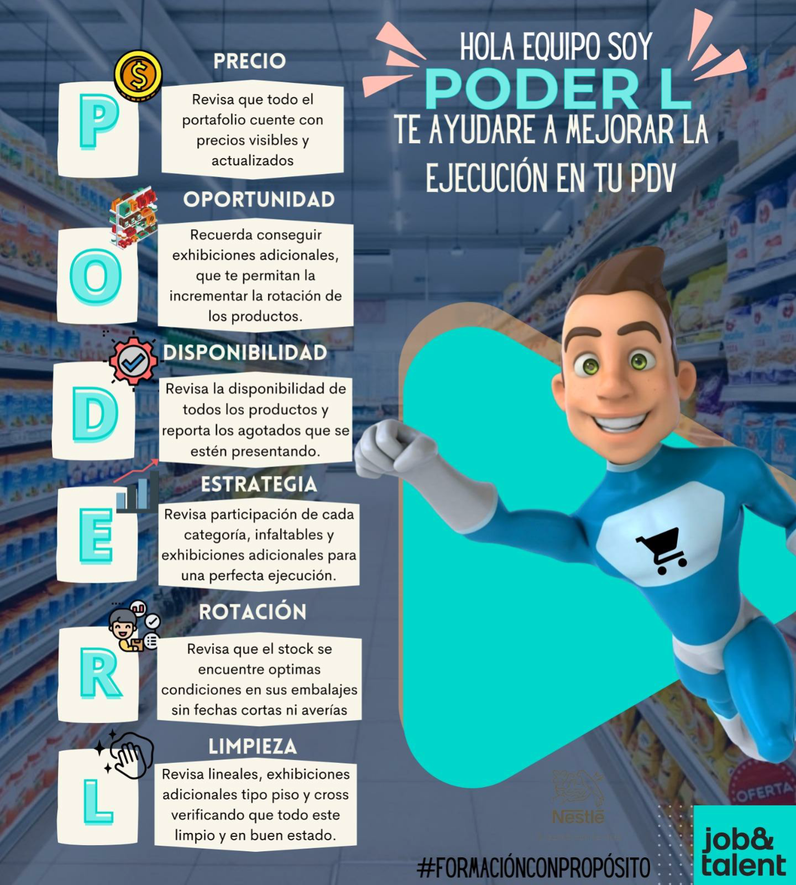

Carpeta Gestores De Mercadeo
Esta es la carpeta de mercadeo para los Gestores, donde encontrarás toda la información acerca de tu labor en punto de venta.
| Nro | Concepto | Estado |
|---|---|---|
| 1 | Funciones | Obligatorio |
| 2 | Presentación personal | Obligatorio |
| 3 | Presentación PDV | Obligatorio |
| 4 | Mandamientos de la ejecución | Obligatorio |
| 5 | Paso a paso en PDV | Obligatorio |
| 6 | Poder L | Obligatorio |
| 7 | Semilleros en ejecución | Obligatorio |
Funciones
- Cumplir con la programación de ruta.
- Cumplir con los horarios establecidos.
- Reportar de forma oportuna la información que se solicite (actividades de la competencia, precios, inventarios, entre otros).
- Tener en cuenta los pilares del mercaderista: portafolio, espacios, precios, visibilidad, promociones y control de inventarios.
- Cumplir con las cuotas de ventas según plan comercial.
- Realizar amarres, pegado de sticker u otras labores logísticas en cumplimiento de campañas promocionales especiales.
- Verificar, reportar y retirar los vencidos.
- Garantizar la correcta utilización de muebles y equipos de la marca.
- Realizar seguimiento e implementación del material POP, utilizándolo con criterio y creatividad.
- Velar por la seguridad de los elementos de la marca (muebles, equipos, obsequios, entre otros).
- Conocer el portafolio con sus atributos y beneficios.
- Garantizar la presencia de los productos.
- Retirar del lineal y reportar al PDV la mercancía en mal estado o deteriorada.
- Reportar al vendedor o representante de Ventas cuando el PDV no realice el retiro de productos próximos a vencerse.
- Velar porque los lineales o exhibiciones no sean cubiertos por productos o muebles de otras marcas y que los Cross propios de la marca sean bien instalados.
- Hacer gestiones permanentes en el PDV para lograr mejores y mayores espacios para la marca, ingreso de muebles, ubicación y exhibiciones adicionales gratis.
- Realizar la medición de lineales en los tiempos que corresponda.
- Mantener permanentemente los lineales con planogramas e implementaciones limpias, bien surtidas y en completo orden.
- Revisar que el label o etiqueta de precio ubicado corresponda al producto exhibido.
- Informar oportunamente al PDV y Vendedor los desajustes en inventarios y acordar fecha para arreglar la novedad en el sistema.
- Participar en los inventarios de los PDV de acuerdo con la necesidad o requerimiento del cliente.
Recuerda el peso máximo de una carga
- Mujeres: 12.5 Kilogramos
- Hombres: 25 Kilogramos
Presentación personal mujer
| Item | Descripción | Imagen |
|---|---|---|
| Cabello | Cabello totalmente recogido, utilizar moña de color negro, no usar ningún tipo de accesorio en el cabello (hebillas de colores, ni balacas). |  |
| Maquillaje | -Maquillaje de tonos suaves y sobrios. -Mantener las uñas limpias y cortas (sin ningún tipo de esmalte). |
|
| Accesorios | Utilizar aretes tipo perla color blanco o
topitos. No piercings visibles (retirar o cubrir con Micropore). No utilizar ningún tipo de accesorios (cadenas, anillos, ni pulseras, para evitar accidentes laborales). |
|
| Uniforme | -Uniforme planchado y limpio. -Uniforme: Camisa corporativa, pantalón corporativo, Botas punta de acero, chaleco. -No usar camisas debajo del uniforme de color fuertes o promocionales. -Medias del mismo color del pantalón o los zapatos. -No usar chaquetas o sacos que no hagan parte del uniforme. -No entubar el pantalón. |
Presentación personal hombre
| Item | Descripción | Imagen |
|---|---|---|
| Cabello | Cabello corto, limpio y peinado. |  |
| Accesorios | No piercings visibles (retirar o
cubrir con Micropore). No utilizar ningún tipo de accesorios (cadenas, anillos, ni pulseras, para evitar accidentes laborales). |
|
| Uniforme | -Uniforme planchado y limpio. -Uniforme: Camisa corporativa, pantalón corporativo, Botas punta de acero, chaleco. -No usar camisas debajo del uniforme de color fuertes o promocionales. -Medias del mismo color del pantalón o los zapatos. -No usar chaquetas o sacos que no hagan parte del uniforme. -No entubar el pantalón. |
Speech presentación PDV
| ¿Te has preguntado como presentar tu PDV en una visita? |
|---|
| 1. Saluda |
| Buenos días/tardes/ bienvenido(a) a (Nombre PDV), mi nombre es (tu nombre). Este PDV mide _____m2 Lo invito a conocer mi PDV y a ingresar a nuestro Power Bi de semilleros en ejecución (muestra el código de escaneo). |
| 2. Cuéntale acerca de tu ruta |
| - Indica si este PDV, es tu punto Pareto. - Este PDV vende ___ (Promedio de venta total Nestlé, validar en hoja de vida de semilleros). - Según clasificación de semilleros este PDV es _______ (Tipología de semilleros validar en hoja de vida semilleros). - En este PDV tengo ______ (#) exhibiciones negociadas (validar en hoja de vida semilleros). - En este PDV tengo ______ (#) exhibiciones adicionales. - La categoría que más rota en este PDV es ________. |
| 3. Recorrido por el PDV |
| - En este PDV tenemos ____ (#) puestos de pago y estamos ubicados en _____ (#) puestos de pago, participando con ______ (menciona las referencias). |
| 4. Revisión de semilleros en ejecución |
| En este momento vamos a revisar semilleros en ejecución: (recuerda que son 3 pilares) -Vamos a revisar el primer pilar “estar” son los invencibles del PDV, (Revisa los invencibles de PDV y comunica cuantos ítems debes tener codificados, # de ítems según semilleros, muestra tu planilla de semilleros informando que referencias no tienes codificadas y/o agotadas). - En el segundo pilar “estar bien” revisamos la participación según regional y la tipología de exhibición (Revisa la participación de cada categoría según tu regional, % de participación, menciona el tipo de exhibición si es segmento o fabricante y comunica los lineamientos de exhibición por categoría, revisa si se cumplen. Muestra tu planilla con la participación de cada categoría mostrar alguna categoría como ejemplo Milo (Lineal de Milo)). - Nuestro último pilar es sobresalir donde vamos a revisar las exhibiciones adicionales y pagas (Dentro del recorrido por el punto de venta comunica las exhibiciones negociadas y adicionales revisa, la ubicación ideal que se debe tener con cada una (muestra la planilla previamente diligenciada) Presentar las exhibiciones negocias (muebles, roba topes, cross, punta de góndola, isla, chimenea y demás) mencionando la prioridad del mes) y si su ubicación es la correcta. |
| 5. Oportunidades de mejora |
| No olvide calificarme la bitácora dejando sus oportunidades de mejora. Recuérdales la bitácora de calificación en DaybyDay y solicita la retroalimentación de la visita (toma apuntes). |
| 6. Despídete |
| Muchas gracias por su visita, ¿puedo colaborarle en algo más?, estoy atento a sus comentarios y oportunidades de mejora. |
Los 10 mandamientos de la ejecución
| VISIBILIDAD | |
|---|---|
| 1. Exhibición | Exponer los productos a la altura de los ojos del shopper, buscando siempre el mejor espacio en las góndolas |
| 2. Exhibiciones adicionales | Buscar siempre espacios adicionales a los lineal ya sugeridos por Cross Merchandising, ya que la conquista de esos espacios es la clave para aumentar la visibilidad e incentivar la compra por impulso. |
| 4. Ejecución | Implementar los planogramas en los puntos de venta con los lineamientos brindados por Semilleros en ejecución. |
| 5. Material POP | Implementar los planogramas en los puntos de venta y destacar los productos Nestlé en la góndola y todos los espacios adicionales. |
| DISPONIBILIDAD | |
| 6. Surtido | Asegurar la presencia y rotación del surtido obligatorio del canal y región evitando agotados en las referencias claves. |
| 7. Agotados | Producto agotado o mal exhibido = Venta perdida (Compra en otro punto de venta o productos de la competencia). No olvidar reforzar el tema de los agotados (por políticas de Nestlé no podemos tener productos vencidos en el lineal o sin reportar con fecha menos a un mes). |
| 8. Invencibles | Asegurar siempre la presencia de los productos clave de cada categoría, garantizando un excelente espacio en la góndola o exhibición. |
| ACCESIBILIDAD | |
| 9. Precio | Mantener los productos con los precios adecuados visibles al shopper. Monitorear las ofertas para evitar marcaciones superiores a las indicadas, que le hacen perder credibilidad a la oferta. |
| 10. Promoción | Las promociones deben tener la mayor visibilidad en el lineal y en puntos extras de exhibición, aprovechando los materiales que son creados para cada una |
Paso a paso en PDV
| Paso | Ejecución |
|---|---|
| 1 | Ingreso a punto de venta: busca la bitácora de punto de venta y tu celular corporativo para registrar tu hora de ingreso, de esta manera puedes evidenciar tu visita a punto de venta y recuerda siempre ser puntual. |
| 2 | Saluda al cliente: suministra la documentación de ingreso, saluda al personal del punto de venta de forma adecuada, procede a guardar tus pertenencias en el lugar indicado. No olvides llevar contigo las herramientas que necesitas para lograr tu labor en PDV, además recuerda que tu presentación y tu actitud son sumamente importantes, ya que eres la imagen de la empresa. |
| 3 | Verificación de punto de venta: empieza tu recorrido según el circuito de compra iniciando por puesto de pago, exhibiciones adicionales y lineales, así determinamos los productos faltantes, deberás ir frentiando todos los productos de cada una de las categorías y tomando nota de lo que se requiere surtir en el lineal. Un buen mercaderista toma nota de los faltantes y realiza un solo viaje a bodega. |
| 4 | Administración de bodega, surtido y revisión de estrategias: dirígete a bodega, y procede a reponer los productos faltantes en la góndola (alineados, y con la etiqueta en la misma posición), inicia con la limpieza del lineal, implementación de precios asegurando que las ofertas nunca estén con un precio mayor al producto regular, revisión de la calidad de los productos y la rotación según la fecha de vencimiento (primeros en entrar primeros en salir). Luego revisa la estrategia de exhibición (semilleros en ejecución). Recuerda semilleros en ejecución es una herramienta que al igual que la naturaleza busca proveer los recursos adecuados para ser crecer nuestras ventas. |
| 5 | Reportes en el aplicativo DaybyDay: Conocer y reportar
|
Poder L
